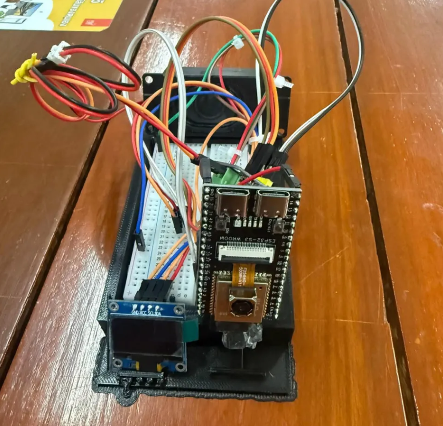
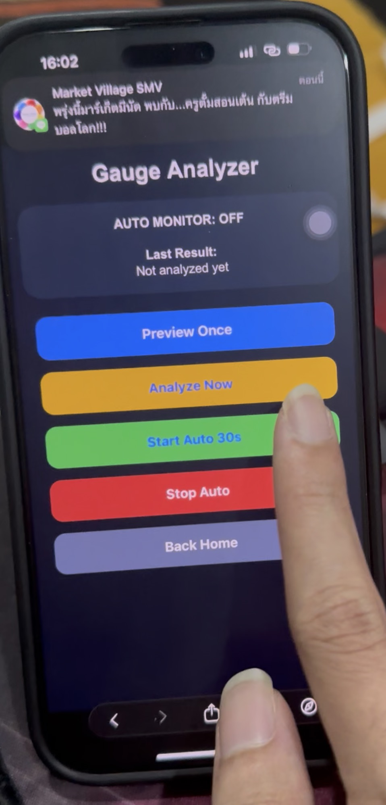
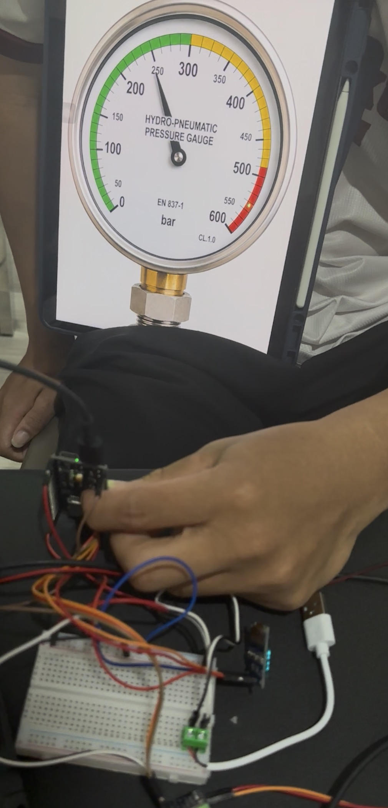
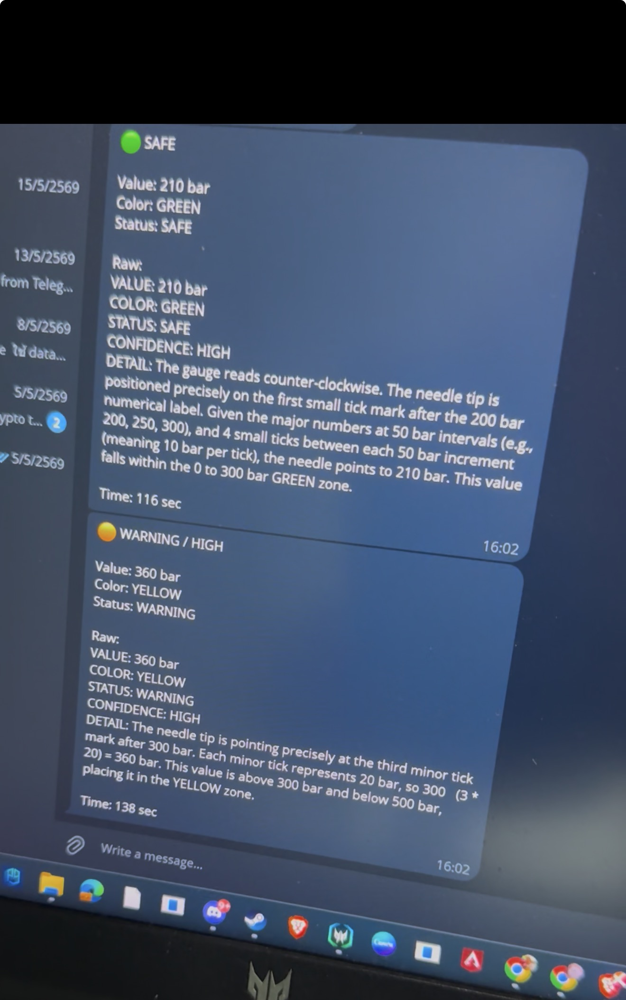
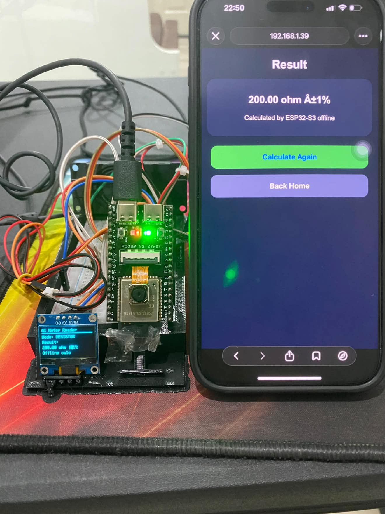
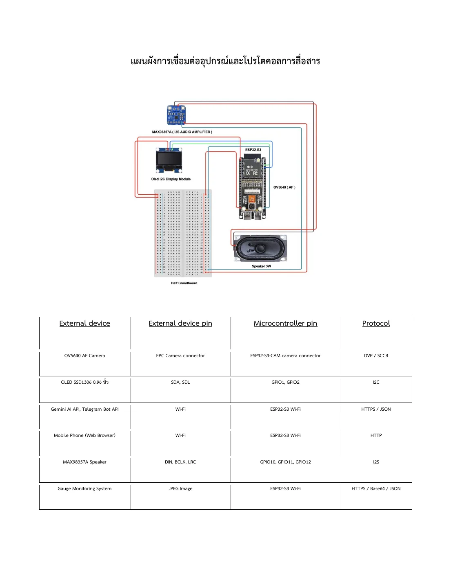
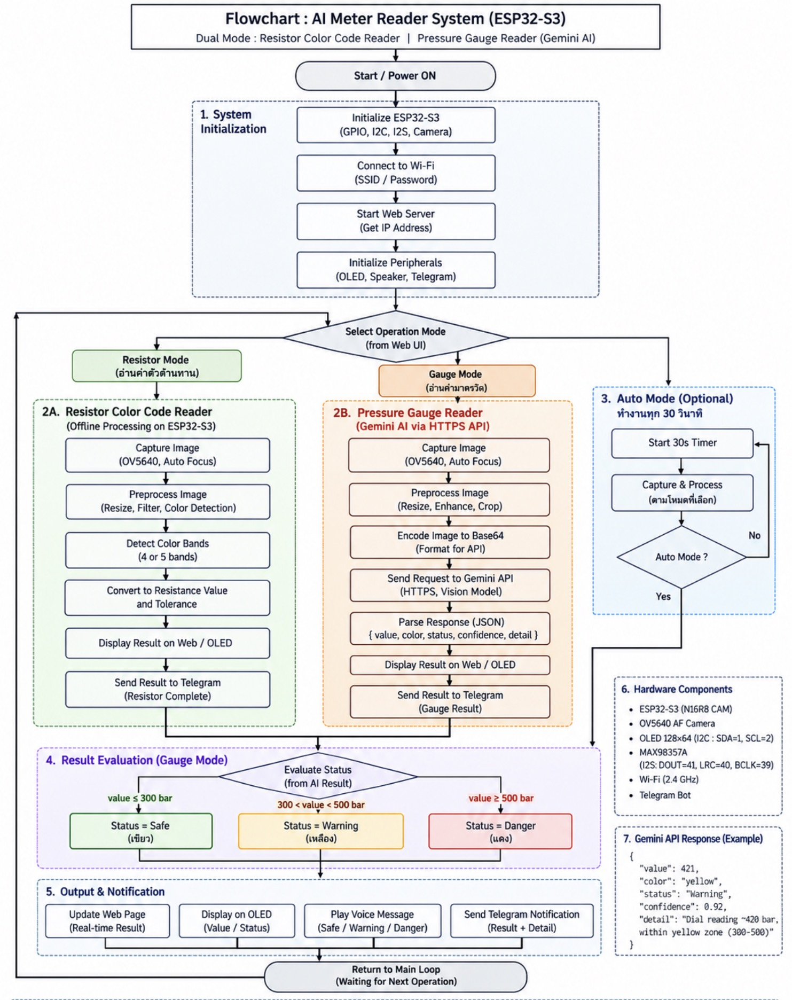

AI-Assisted Pressure Gauge Reading & Embedded Resistor Calculator
Co-developed an ESP32-S3-CAM prototype for local 4/5-band resistor calculations and pressure-gauge image analysis using an OV5640 camera and the Gemini HTTPS REST API.
Manual readings can be slow or inaccurate
Small resistor bands and detailed pressure-gauge scales are easy to misread, especially when a fast status decision is needed.
Split tasks between edge and cloud
The ESP32-S3 handles resistor calculations locally, while camera images are sent to Gemini for gauge analysis.
Integrated both operating modes
Parsed API responses for gauge readings and needle color zones, then connected the web dashboard, OLED display, I2S audio, and Telegram status alerts.
Working prototype demonstrated to faculty
The prototype calculated resistors locally and reported safe, warning, and danger gauge conditions through its display and notification outputs.

Working prototype
See both modes in action
The demonstration shows the resistor calculator, gauge image capture, AI analysis, OLED output, Telegram notification, and audio alert.
Watch system demo ↗ View source code ↗



Resistor Calculator
The user selects the color bands for a 4- or 5-band resistor. The ESP32-S3 calculates resistance and tolerance locally, then displays the result on the web interface and OLED.
Gauge Analyzer
An on-demand Preview image helps align the OV5640 camera. Manual analysis or 30-second automatic monitoring sends a fresh capture to Gemini through HTTPS, then parses the gauge value, needle color zone, and risk status.
Reduced preview load
Continuous image streaming overloaded the controller. I replaced it with on-demand capture triggered by Preview or Analyze requests.
Improved gauge clarity
The camera was upgraded from OV2640 to autofocus OV5640, with VGA resolution and JPEG quality 10 for clearer dial details.
Prevented stale readings
The system flushes three buffered camera frames before each analysis to avoid stale images and uses stable USB-C power to address repeated board resets.
Validation
Three pressure zones tested
The prototype selected the higher-risk state at a color boundary and delivered each result through the appropriate output channels.
Green zone
OLED status
Boundary case
OLED + Telegram
Red zone
OLED + Telegram
System documentation
Hardware connections and program flow
Documentation developed alongside the working prototype.

